Deploying CDO-Managed FTDv Cluster in Azure
Many companies are shifting their workloads to the cloud and it’s important to deploy a level of segmentation to protect from Internet threats as well as Internal.
Cisco has a next-generation firewall that has a perfect fit to handle this requirement.
Starting with version 7.3, Secure Firewall Threat Defense (aka FTD) supports clustering capabilities that we’re used to with hardware models in Azure.
As with hardware models, the members of the cluster utilize CCL link to exchange control and redirected data plane packets. Unlike hardware models, however, the virtual firewalls use VXLAN protocol to exchange data. This is mainly due to cloud environments not providing Layer 2 network capabilities.
Unlike AWS, we can have a single subnet spanning multiple Zones in Azure, so it is possible to have a single cluster spanning multiple zones in Azure.
For data plane traffic in Azure, the cluster will integrate with Azure Load Balancer running in Gateway Load Balancing mode. The traffic between Azure Load Balancer and the firewalls is exchanged using VXLAN protocol. There is a single physical interface on the firewall serving as the underlay and two VTEP interfaces with unique VXLAN Segment IDs. One segment is for internal traffic and one segment for Internet-bound traffic. In Azure terminology, this is called Paired-Proxy Mode.
For management of the cluster, we will use Cloud-Delivered Firewall Management Center (cdFMC) which is a part of Cisco’s cloud-based firewall management service named Cisco Defense Orchestrator (CDO).
Full code for this post is available here: https://github.com/vbobrov/terraform/tree/main/azure/ftdv-cluster
For additional information see this link: https://www.cisco.com/c/en/us/td/docs/security/secure-firewall/management-center/cluster/ftdv-cluster-public.html
Topology
The following diagram shows the topology used for this post.
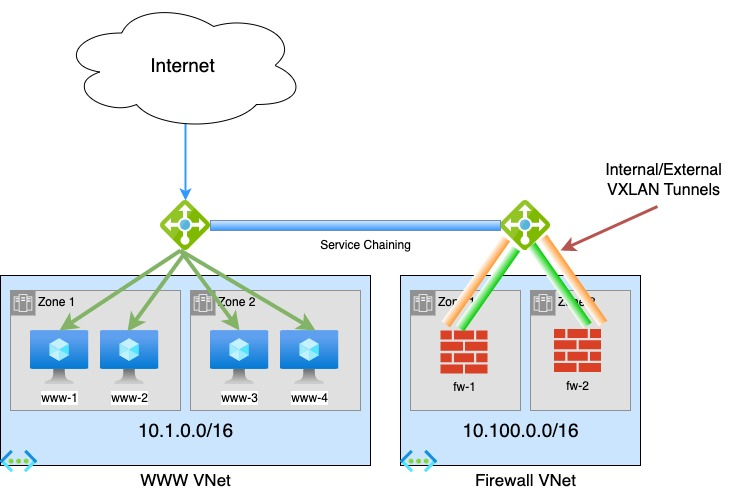
Compared to GWLB topology in AWS covered in the previous post, Azure deployment is much simpler.
Firewall VNET
This Virtual Network holds our two firewalls. Just like the AWS topology, the firewalls have 4 interfaces:
- Management
- Diagnostic (not used)
- Cluster Control Link (CCL)
- Data. Traffic on this interface is encapsulated in VXLAN.
Gateway Load Balancer
GWLB always runs in Internal mode and is also configured to encapsulate traffic using VXLAN with matching UDP Ports and Segment IDs.
In this post, we're using default Azure numbers:
- Internal: UDP/10800 and Segment 800
- External: UDP/10801 and Segment 801
Note that these numbers must match the firewall configuration
WWW VNET
This network holds 4 Ubuntu servers running Apache web servers with a simple static web page.
External Azure Load Balancer running in Application mode is used to load balancer TCP/80 traffic to the 4 web servers.
Service Chaining
Traffic is redirected to GWLB and the firewalls using Service Chaining. The WWW load balancer is configured to send its traffic to the GWLB. This forwards the traffic to the firewalls without changes to source and destination IP addresses or ports.
Traffic Flow
Microsoft has number of write ups about Gateway Load Balancing. This is one of the links: https://learn.microsoft.com/en-us/azure/load-balancer/gateway-overview.
The following diagram is taken from the page above
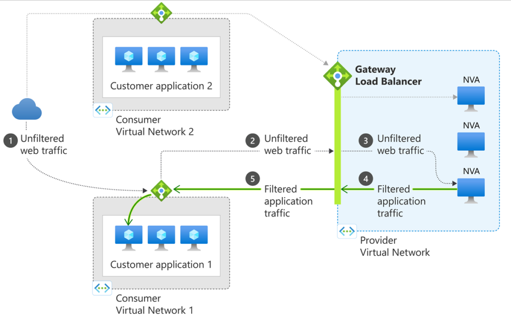
- Traffic from the Internet arrives at the WWW Load Balancer.
- Traffic transparently redirected to GWLB
- GWLB forwards it to one of the firewalls
- After inspecting the traffic through the security policy, the traffic is returned to GWLB
- Traffic is returned to the WWW Load Balancer and is forwarded to one of the web servers.
Firewall Bootstrap
Unlike AWS, Azure has two virtual machine properties where we can feed configuration data: User Data and Custom Data. FTDV utilizes Custom Data.
This is an example custom data.
CclSubnetRange defines the range of subnet where firewall CCL links are connected. The firewalls discover each other on this range.
HealthProbePort define the port on which the firewall will start a TCP listener that is used by GWLB to probe the firewall of up status.
There are also additional options to specify Azure load balancer specific parameters.
This simplified configuration gets converted into ASA configuration when the firewall boots up for the first time. It is also possible to directly specify CLI commands that the firewall will boot with. See an example here: https://www.cisco.com/c/en/us/td/docs/security/secure-firewall/management-center/cluster/ftdv-cluster-public.html#Cisco_Concept.dita_0bbab4ab-2fed-4505-91c3-3ee6c43bb334
{
"AdminPassword": "password",
"Hostname": "ftd-1",
"FirewallMode": "Routed",
"ManageLocally": "No",
"Cluster": {
"CclSubnetRange": "10.1.1.1 10.1.1.16",
"ClusterGroupName": "lab_cluster_1",
"HealthProbePort": "12345"
"GatewayLoadBalancerIP": "1.2.3.4",
"EncapsulationType": "vxlan",
"InternalPort": "10800",
"ExternalPort": "10801",
"InternalSegId": "800",
"ExternalSegId": "801"
}
}SSH Access - admin
When logging in with this account, we enter into the CLISH shell of Secure Firewall. Unlike AWS, ssh public key is not copied to this user and password is the only way to authenticate with this account after provisioning.
SSH Access - azadmin
Secure Firewall is built on top of Linux as OS.
When a Linux Virtual Machine is provisioned in Azure, it comes with an ssh account that goes directly into Linux. This account is defined in VM definition itself. For this post, that username is azadmin and it is reference further in this document in terraform section.
This username supports both password authentication as well as the ssh public key. Password on the account is set to the one from Custom Data and public key is taken from Azure resource definition.
Interacting with CDO
Cisco Defense Orchestrator has a robust GUI interface for managing many different products. However, it lacks in programmability support.
Luckily, the product is built as API-first. That means that as we work in the GUI using a web browser, it interacts with CDO backend using well structured REST APIs.
We can easily reverse engineer those APIs using developer tools available in most browsers.
The template included in this post includes ansible playbooks that utilize the CDO REST APIs to fully automate adding of the firewall cluster into CDO.
There’s also a section in the document on adding the cluster to CDO manually through the web GUI.
Ansible Playbook
Note: in order for Azure Load Balancer Health Probes to succeed, a default route is needed on the data interface. The playbook does not add this route. See the CDO section further in this document on steps to manually add this route
Once the firewalls are provisioned by Terraform, cd-onboard.yml is executed on the management host.
Inventory
ansible-inv.yml file is generated dynamically by terraform based on ansible-inv.tftpl template
This is an example of a generated file.
The inventory is broken into two sections.
The top section defines cdo-related values. acp variable reference to the name of the Access Policy in FMC that will be applied to the newly added devices
The second section defines the clusters to be added to CDO. Only one of the cluster members needs to be added to CDO. Terraform template will populate it with the first firewall. It is quite possible that the first firewall does not become the Control node. However, the cluster can still be added using a Data node.
all:
hosts:
cdo:
ansible_network_os: eos
token: eyJhbGciOiJSUzI1_LyPRNfgdUJXTiKzRAaZqg
base_url: https://www.defenseorchestrator.com
acp: AZ-Cluster
tier: FTDv30
licenses: BASE,THREAT,URLFilter,MALWARE
children:
clusters:
hosts:
ftd-cluster-1:
hosts:
- 10.100.1.4
vars:
ansible_network_os: ios
ansible_user: admin
ansible_password: Cisco123!
ssh_options: -o ConnectTimeout=5 -o ConnectionAttempts=1 -oStrictHostKeyChecking=no -oUserKnownHostsFile=/dev/null
Playbook components
Note that the playbook is executed on cdo host only. We use hostvar variable to lookup cluster information from the inventory.
Many of the tasks in the playbook were reverse engineered using Developer Tools in Chrome.
At the top, we define an anchor variable with HTTP parameters to reuse them in other tasks.
General
- hosts: cdo
connection: httpapi
gather_facts: False
vars:
http_headers: &uri_options
timeout: 15
headers:
Accept: "application/json"
Content-Type: "application/json"
Authorization: "Bearer {{token}}" Validation
Here we ensure that the cluster name supplied via CLI is included in the inventory
- name: Check if cluster_name was supplied
fail:
msg: cluster_name var must be supplied. Eg. --extra-vars='cluster_name=ftd_cluster'
when: cluster_name is not defined
- name: Check if cluster is in inventory
fail:
msg: "Cluster {{cluster_name}} is not found in inventory"
when: cluster_name not in hostvarscdFMC Information
- name: Get UID of cdFMC
uri:
url: "{{base_url}}/aegis/rest/v1/services/targets/devices?q=deviceType:FMCE"
<<: *uri_options
register: fmc_uid
- name: Get FMC Domain UID
uri:
url: "{{base_url}}/aegis/rest/v1/device/{{fmc_uid.json.0.uid}}/specific-device"
<<: *uri_options
register: domain_uidFind ID of Access Policy
Note that we’re not using the anchor variable here because we need an additional fmc-hostname header.
- name: Get Access Policies
uri:
url: "{{base_url}}/fmc/api/fmc_config/v1/domain/{{domain_uid.json.domainUid}}/policy/accesspolicies?limit=1000"
timeout: 15
headers:
Accept: "application/json"
Content-Type: "application/json"
Authorization: "Bearer {{token}}"
fmc-hostname: "{{fmc_uid.json.0.host}}"
register: acp_list
- name: Find matching policy
set_fact:
acp_id: "{{item.id}}"
loop: "{{acp_list.json['items']}}"
loop_control:
label: "{{item.name}}/{{item.id}}"
when: item.name == acp
- name: Stop if ACP is not found
meta: end_play
when: acp_id is not definedAdd FTD Device to CDO and set it to Pending
- name: Add Device to CDO
uri:
url: "{{base_url}}/aegis/rest/v1/services/targets/devices"
timeout: 15
method: POST
body_format: json
body:
associatedDeviceUid: "{{fmc_uid.json.0.uid}}"
deviceType: FTDC
metadata:
accessPolicyName: "{{acp}}"
accessPolicyUuid: "{{acp_id}}"
license_caps: "{{licenses}}"
performanceTier: "{{tier}}"
model: false
name: "{{cluster_name}}"
state: NEW
type: devices
<<: *uri_options
register: cdo_device
- name: Get specific-device
uri:
url: "{{base_url}}/aegis/rest/v1/device/{{cdo_device.json.uid}}/specific-device"
<<: *uri_options
register: specific_device
- name: Initiate Onboarding
uri:
url: "{{base_url}}/aegis/rest/v1/services/firepower/ftds/{{specific_device.json.uid}}"
method: PUT
body_format: json
body:
queueTriggerState: INITIATE_FTDC_ONBOARDING
<<: *uri_optionsGet Onboarding Command and Send it to FTD
The SSH task will continue retrying every 30 seconds until it’s able to SSH into the FTD and get a success response from config manager add command.
Note that we're using sshpass command to login to the firewall with a password.
timeout command is used to kill the sshpass command in case it gets stuck
- name: Get onboarding command
uri:
url: "{{base_url}}/aegis/rest/v1/services/targets/devices/{{cdo_device.json.uid}}"
<<: *uri_options
register: cli_command
- name: Print command
debug:
msg: "{{cli_command.json.metadata.generatedCommand}}"
- name: Send config manager command
connection: local
command: "timeout 30 sshpass -p {{hostvars[cluster_name].ansible_password}} ssh {{hostvars[cluster_name].ssh_options}} {{hostvars[cluster_name].ansible_user}}@{{item}} {{cli_command.json.metadata.generatedCommand}}"
register: manager
retries: 50
delay: 30
until: '"success" in manager.stdout'
loop: "{{hostvars[cluster_name].hosts}}"Initiate Onboarding and Wait for Completion
Here, we trigger the onboarding process and wait for the device to reach Online status.
Notice that we send the onboarding command to the firewall before we initiate the onboarding process in CDO. The firewall continually tries to reach out to CDO to register, so it is ok to perform this step after the SSH command finally succeeds.
Another important point is the onboarding process only runs for a few minutes, so it is crucial that the config manager add command is executed in this short onboarding window. That is another reason that we make sure that the SSH command is successful before we put CDO into onboarding mode.
- name: Initiate Registration
uri:
url: "{{base_url}}/aegis/rest/v1/services/firepower/ftds/{{specific_device.json.uid}}"
method: PUT
body_format: json
body:
queueTriggerState: INITIATE_FTDC_REGISTER
<<: *uri_options
- name: Wait for registration completion
uri:
url: "{{base_url}}/aegis/rest/v1/services/targets/devices/{{cdo_device.json.uid}}"
<<: *uri_options
retries: 50
delay: 30
register: device_state
until: device_state.json.connectivityState == 1Terraform Resources
The template is broken up into several files by function. All of the files contain comments describing the purpose of each resources. In this post, I will call out specific resources.
variable.tf
Here are important variables that need to be set:
- fw_zones defines how many zones the firewall cluster is deployed to. Note that not all Azure regions have zones. Those that do have 3 zones.
- fw_per_zone defines how many Secure Firewalls are deployed to each zone
- cluster_prefix is prepended to the name of the firewall cluster
- www_zones defines how many zones the test web servers are deployed to
- www_per_zone defines how many web servers are deployed in each zone
- ssh_sources defines the public IP address where SSH connections to the bastion/management host will initiate from. This variable is used in provisioning the security group.
- ssh_file defines the location of the ssh private key that will be uploaded to the bastion host to ssh to the firewalls
- ssh_key is the name of the ssh key in AWS that will be used for the firewall EC2 instances. It must match the private key above
- cdo_token holds the value of the API token from CDO
- cluster_prefix is used for naming of the clusters. This name will be prepended with a number for each AZ. Eg. ftd-cluster-1, ftd-cluster-2, etc
- acp_policy defines the access policy for these clusters in cdFMC
rg.tf
This file defines the parent Resource Group for all resources as well as a Storage Account that's required to access console ports of the Firewalls
resource "azurerm_resource_group" "gwlb" {
name = "gwlb-rg"
location = var.location
}
resource "azurerm_storage_account" "diag" {
name = "gwlbdiag"
resource_group_name = azurerm_resource_group.gwlb.name
location = azurerm_resource_group.gwlb.location
account_tier = "Standard"
account_replication_type = "LRS"
}network.tf
In this file, we define various network resources
Firewall VNET has 10.100.0.0/16 CIDR and WWW has 10.1.0.0/16.
resource "azurerm_virtual_network" "gwlb" {
name = "gwlb-net"
address_space = ["10.100.0.0/16"]
resource_group_name = azurerm_resource_group.gwlb.name
location = azurerm_resource_group.gwlb.location
}
resource "azurerm_virtual_network" "www" {
name = "www-net"
address_space = ["10.1.0.0/16"]
resource_group_name = azurerm_resource_group.gwlb.name
location = azurerm_resource_group.gwlb.location
}Various subnets are created. The names of the subnets are self-explainatory.
Subnet addresses are automatically calculated based on VNET CIDR
resource "azurerm_subnet" "fw_management" {
name = "fw-management"
resource_group_name = azurerm_resource_group.gwlb.name
virtual_network_name = azurerm_virtual_network.gwlb.name
address_prefixes = [cidrsubnet(azurerm_virtual_network.gwlb.address_space[0], 8, 1)]
}
resource "azurerm_subnet" "fw_data" {
name = "fw-data"
resource_group_name = azurerm_resource_group.gwlb.name
virtual_network_name = azurerm_virtual_network.gwlb.name
address_prefixes = [cidrsubnet(azurerm_virtual_network.gwlb.address_space[0], 8, 2)]
}
resource "azurerm_subnet" "fw_ccl" {
name = "fw-ccl"
resource_group_name = azurerm_resource_group.gwlb.name
virtual_network_name = azurerm_virtual_network.gwlb.name
address_prefixes = [cidrsubnet(azurerm_virtual_network.gwlb.address_space[0], 8, 3)]
}
resource "azurerm_subnet" "www" {
name = "www-subnet"
resource_group_name = azurerm_resource_group.gwlb.name
virtual_network_name = azurerm_virtual_network.www.name
address_prefixes = [cidrsubnet(azurerm_virtual_network.www.address_space[0], 8, 1)]
}We define a few Network Security Groups. Since the firewalls are in an isolated VNET, we allow full access for that NSG.
Contents of the management NSG are generated using dynamic component of terraform using ssh_sources variable
resource "azurerm_network_security_group" "fw" {
name = "fw-nsg"
location = azurerm_resource_group.gwlb.location
resource_group_name = azurerm_resource_group.gwlb.name
security_rule {
name = "All-Inbound"
priority = 1001
direction = "Inbound"
access = "Allow"
protocol = "*"
source_port_range = "*"
destination_port_range = "*"
source_address_prefix = "*"
destination_address_prefix = "*"
}
security_rule {
name = "All-Outbound"
priority = 1001
direction = "Outbound"
access = "Allow"
protocol = "*"
source_port_range = "*"
destination_port_range = "*"
source_address_prefix = "*"
destination_address_prefix = "*"
}
}
resource "azurerm_network_security_group" "www" {
name = "www-nsg"
location = azurerm_resource_group.gwlb.location
resource_group_name = azurerm_resource_group.gwlb.name
security_rule {
name = "HTTP"
priority = 1001
direction = "Inbound"
access = "Allow"
protocol = "Tcp"
source_port_range = "*"
destination_port_range = "80"
source_address_prefix = "*"
destination_address_prefix = "*"
}
}
resource "azurerm_network_security_group" "mgm" {
name = "mgm-nsg"
location = azurerm_resource_group.gwlb.location
resource_group_name = azurerm_resource_group.gwlb.name
dynamic "security_rule" {
for_each = { for s in range(length(var.ssh_sources)) : tostring(1001 + s) => var.ssh_sources[s] }
content {
name = "SSH_${security_rule.key}"
priority = security_rule.key
direction = "Inbound"
access = "Allow"
protocol = "Tcp"
source_port_range = "*"
destination_port_range = "22"
source_address_prefix = security_rule.value
destination_address_prefix = "*"
}
}
}
resource "azurerm_subnet_network_security_group_association" "www" {
subnet_id = azurerm_subnet.www.id
network_security_group_id = azurerm_network_security_group.www.id
}www.tf
This file deploys test ubuntu web servers.
We use user_data argument to feed a simple web page into each web server to display which number it is. This allows us to monitor which of the servers our browser is routed to.
resource "azurerm_network_interface" "www" {
count = var.www_zones * var.www_per_zone
name = "www-nic-${count.index + 1}"
location = azurerm_resource_group.gwlb.location
resource_group_name = azurerm_resource_group.gwlb.name
ip_configuration {
name = "www-nic-ip-${count.index + 1}"
subnet_id = azurerm_subnet.www.id
private_ip_address_allocation = "Dynamic"
}
}
resource "azurerm_linux_virtual_machine" "www" {
count = var.www_zones * var.www_per_zone
name = "www-${count.index + 1}"
computer_name = "www-${count.index + 1}"
location = azurerm_resource_group.gwlb.location
zone = tostring(floor(count.index / var.www_per_zone) + 1)
resource_group_name = azurerm_resource_group.gwlb.name
network_interface_ids = [azurerm_network_interface.www[count.index].id]
size = "Standard_B1s"
admin_username = "azadmin"
admin_password = "Cisco123!"
disable_password_authentication = false
user_data = base64encode(<<-EOT
#!/bin/bash
apt update
apt upgrade
apt install -y apache2
echo "<h1>www-${count.index + 1}</h1>" >/var/www/html/index.html
EOT
)
source_image_reference {
publisher = "Canonical"
offer = "0001-com-ubuntu-server-jammy-daily"
sku = "22_04-daily-lts"
version = "latest"
}
os_disk {
name = "www-os-disk-${count.index + 1}"
caching = "ReadWrite"
storage_account_type = "Standard_LRS"
}
admin_ssh_key {
username = "azadmin"
public_key = file("~/.ssh/aws-ssh-1.pub")
}
boot_diagnostics {
storage_account_uri = azurerm_storage_account.diag.primary_blob_endpoint
}
}wwwlb.tf
This file defines resources to create the external load balancer for the test web servers.
Notable argument in this file is gateway_load_balancer_frontend_ip_configuration_id. This establishes a service chain to the gateway load balancer with the firewalls behind it.
We're defining explicit outbound rules to ensure that the web servers are able to get out to the Internet. Without these rules, outbound connectivity was intermittent.
A DNS record for www.az.ciscodemo.net is also created in this file
resource "azurerm_public_ip" "www_lb" {
name = "www-ip"
location = azurerm_resource_group.gwlb.location
resource_group_name = azurerm_resource_group.gwlb.name
allocation_method = "Static"
sku = "Standard"
}
resource "azurerm_public_ip" "www_outbound" {
name = "www-outbound"
location = azurerm_resource_group.gwlb.location
resource_group_name = azurerm_resource_group.gwlb.name
allocation_method = "Static"
sku = "Standard"
}
resource "azurerm_lb" "www" {
name = "www-lb"
location = azurerm_resource_group.gwlb.location
resource_group_name = azurerm_resource_group.gwlb.name
sku = "Standard"
frontend_ip_configuration {
name = "www-lb-ip"
public_ip_address_id = azurerm_public_ip.www_lb.id
gateway_load_balancer_frontend_ip_configuration_id = azurerm_lb.fw.frontend_ip_configuration[0].id
}
frontend_ip_configuration {
name = "www-outbound"
public_ip_address_id = azurerm_public_ip.www_outbound.id
}
}
resource "azurerm_lb_backend_address_pool" "www" {
loadbalancer_id = azurerm_lb.www.id
name = "www-servers"
}
resource "azurerm_lb_backend_address_pool_address" "www" {
count = var.www_zones * var.www_per_zone
name = "www-lb-pool-${count.index + 1}"
backend_address_pool_id = azurerm_lb_backend_address_pool.www.id
virtual_network_id = azurerm_virtual_network.www.id
ip_address = azurerm_network_interface.www[count.index].ip_configuration[0].private_ip_address
}
resource "azurerm_lb_probe" "http_probe" {
loadbalancer_id = azurerm_lb.www.id
name = "http-probe"
protocol = "Http"
request_path = "/"
port = 80
}
resource "azurerm_lb_rule" "www" {
loadbalancer_id = azurerm_lb.www.id
name = "HTTP"
protocol = "Tcp"
frontend_port = 80
backend_port = 80
frontend_ip_configuration_name = "www-lb-ip"
backend_address_pool_ids = [azurerm_lb_backend_address_pool.www.id]
probe_id = azurerm_lb_probe.http_probe.id
disable_outbound_snat = true
}
resource "azurerm_lb_outbound_rule" "www" {
name = "www-outbound"
loadbalancer_id = azurerm_lb.www.id
protocol = "All"
backend_address_pool_id = azurerm_lb_backend_address_pool.www.id
allocated_outbound_ports = 512
frontend_ip_configuration {
name = "www-outbound"
}
}
resource "azurerm_dns_a_record" "www" {
name = "www"
zone_name = "az.ciscodemo.net"
resource_group_name = "dns"
ttl = 5
records = [azurerm_public_ip.www_lb.ip_address]
}
ftd.tf
This file defines resources related to Secure Firewall.
CclSubnetRange is automatically calculated based on the subnet address for the CCL network
Note that the firewall interfaces must be listed in the specific order: management, diagnostic, data and ccl.
resource "azurerm_network_interface" "fw_management" {
count = var.fw_zones * var.fw_per_zone
name = "fw-management-nic-${count.index + 1}"
location = azurerm_resource_group.gwlb.location
resource_group_name = azurerm_resource_group.gwlb.name
ip_configuration {
name = "fw-management-nic-ip-${count.index + 1}"
subnet_id = azurerm_subnet.fw_management.id
private_ip_address_allocation = "Dynamic"
}
}
resource "azurerm_network_interface" "fw_diagnostic" {
count = var.fw_zones * var.fw_per_zone
name = "fw-diagnostic-nic-${count.index + 1}"
location = azurerm_resource_group.gwlb.location
resource_group_name = azurerm_resource_group.gwlb.name
ip_configuration {
name = "fw-diagnostic-nic-ip-${count.index + 1}"
subnet_id = azurerm_subnet.fw_management.id
private_ip_address_allocation = "Dynamic"
}
}
resource "azurerm_network_interface" "fw_data" {
count = var.fw_zones * var.fw_per_zone
name = "fw-data-nic-${count.index + 1}"
location = azurerm_resource_group.gwlb.location
resource_group_name = azurerm_resource_group.gwlb.name
ip_configuration {
name = "fw-data-nic-ip-${count.index + 1}"
subnet_id = azurerm_subnet.fw_data.id
private_ip_address_allocation = "Dynamic"
}
}
resource "azurerm_network_interface" "fw_ccl" {
count = var.fw_zones * var.fw_per_zone
name = "fw-ccl-nic-${count.index + 1}"
location = azurerm_resource_group.gwlb.location
resource_group_name = azurerm_resource_group.gwlb.name
ip_configuration {
name = "fw-cl-nic-ip-${count.index + 1}"
subnet_id = azurerm_subnet.fw_ccl.id
private_ip_address_allocation = "Dynamic"
}
}
resource "azurerm_linux_virtual_machine" "ftd" {
count = var.fw_zones * var.fw_per_zone
name = "ftd-${count.index + 1}"
computer_name = "ftd-${count.index + 1}"
location = azurerm_resource_group.gwlb.location
zone = tostring(floor(count.index / var.fw_per_zone) + 1)
resource_group_name = azurerm_resource_group.gwlb.name
network_interface_ids = [
azurerm_network_interface.fw_management[count.index].id,
azurerm_network_interface.fw_diagnostic[count.index].id,
azurerm_network_interface.fw_data[count.index].id,
azurerm_network_interface.fw_ccl[count.index].id
]
size = "Standard_D3_v2"
admin_username = "azadmin"
admin_password = "Cisco123!"
disable_password_authentication = false
custom_data = base64encode(jsonencode(
{
"AdminPassword": "Cisco123!",
"Hostname": "ftd-${count.index + 1}",
"FirewallMode": "Routed",
"ManageLocally": "No",
"Cluster": {
"CclSubnetRange": "${cidrhost(azurerm_subnet.fw_ccl.address_prefixes[0],1)} ${cidrhost(azurerm_subnet.fw_ccl.address_prefixes[0],32)}",
"ClusterGroupName": "${var.cluster_prefix}-1",
"HealthProbePort": "12345",
"GatewayLoadBalancerIP": "${azurerm_lb.fw.frontend_ip_configuration[0].private_ip_address}",
"EncapsulationType": "vxlan",
"InternalPort": "10800",
"ExternalPort": "10801",
"InternalSegId": "800",
"ExternalSegId": "801"
}
}
)
)
source_image_reference {
publisher = "cisco"
offer = "cisco-ftdv"
sku = "ftdv-azure-byol"
version = "73.0.51"
}
plan {
publisher = "cisco"
product = "cisco-ftdv"
name = "ftdv-azure-byol"
}
os_disk {
name = "fw-os-disk-${count.index + 1}"
caching = "ReadWrite"
storage_account_type = "Standard_LRS"
}
admin_ssh_key {
username = "azadmin"
public_key = file("~/.ssh/aws-ssh-1.pub")
}
boot_diagnostics {
storage_account_uri = azurerm_storage_account.diag.primary_blob_endpoint
}
}gwlb.tf
This file defines resources to create gateway load balancer with the firewalls behind it.
Note that the probe tcp port and tunnel ports and identifiers must match the same parameters for the firewalls.
resource "azurerm_lb" "fw" {
name = "fw-lb"
location = azurerm_resource_group.gwlb.location
resource_group_name = azurerm_resource_group.gwlb.name
sku = "Gateway"
frontend_ip_configuration {
name = "fw-lb-ip"
subnet_id = azurerm_subnet.fw_data.id
}
}
resource "azurerm_lb_backend_address_pool" "fw" {
loadbalancer_id = azurerm_lb.fw.id
name = "firewalls"
tunnel_interface {
identifier = 800
type = "Internal"
protocol = "VXLAN"
port = 10800
}
tunnel_interface {
identifier = 801
type = "External"
protocol = "VXLAN"
port = 10801
}
}
resource "azurerm_lb_backend_address_pool_address" "fw" {
count = var.fw_zones * var.fw_per_zone
name = "fw-lb-pool-${count.index + 1}"
backend_address_pool_id = azurerm_lb_backend_address_pool.fw.id
virtual_network_id = azurerm_virtual_network.gwlb.id
ip_address = azurerm_network_interface.fw_data[count.index].ip_configuration[0].private_ip_address
}
resource "azurerm_lb_probe" "tcp_12345" {
loadbalancer_id = azurerm_lb.fw.id
name = "tcp-12345"
protocol = "Tcp"
port = 12345
}
resource "azurerm_lb_rule" "gwlb" {
loadbalancer_id = azurerm_lb.fw.id
name = "All-Traffic"
protocol = "All"
frontend_ip_configuration_name = "fw-lb-ip"
frontend_port = 0
backend_port = 0
load_distribution = "SourceIP"
backend_address_pool_ids = [azurerm_lb_backend_address_pool.fw.id]
probe_id = azurerm_lb_probe.tcp_12345.id
}mgm.tf
This file defines a small ubuntu server used for us to gain access to the environment remotely via SSH.
resource "azurerm_public_ip" "mgm" {
name = "mgm-ip"
location = azurerm_resource_group.gwlb.location
resource_group_name = azurerm_resource_group.gwlb.name
allocation_method = "Static"
}
resource "azurerm_network_interface_security_group_association" "mgm" {
network_interface_id = azurerm_network_interface.mgm.id
network_security_group_id = azurerm_network_security_group.mgm.id
}
resource "azurerm_network_interface" "mgm" {
name = "mgm-nic"
location = azurerm_resource_group.gwlb.location
resource_group_name = azurerm_resource_group.gwlb.name
ip_configuration {
name = "mgm-nic-ip"
subnet_id = azurerm_subnet.fw_management.id
private_ip_address_allocation = "Dynamic"
public_ip_address_id = azurerm_public_ip.mgm.id
}
}
resource "azurerm_linux_virtual_machine" "mgm" {
name = "fw-mgm"
location = azurerm_resource_group.gwlb.location
resource_group_name = azurerm_resource_group.gwlb.name
network_interface_ids = [azurerm_network_interface.mgm.id]
size = "Standard_B1s"
computer_name = "fw-mgm"
admin_username = "azadmin"
disable_password_authentication = true
source_image_reference {
publisher = "Canonical"
offer = "0001-com-ubuntu-server-jammy-daily"
sku = "22_04-daily-lts"
version = "latest"
}
os_disk {
name = "mgm-os-disk"
caching = "ReadWrite"
storage_account_type = "Standard_LRS"
}
admin_ssh_key {
username = "azadmin"
public_key = file("~/.ssh/aws-ssh-1.pub")
}
}ansible.tf
This file generates the inventory file from ansible-inv.tftpl template
resource "local_file" "ansible_inv" {
filename = "ansible-inv.yml"
content = templatefile("ansible-inv.tftpl", {
cdo_token = var.cdo_token
acp_policy = var.acp_policy
cluster = "${var.cluster_prefix}-1"
password = var.admin_password
node = azurerm_network_interface.fw_management[0].ip_configuration[0].private_ip_address
})
}We use a null resource to launch the ansible playbook. ansible-playbook is launched using remote-exec on the Ubuntu management host.
resource "null_resource" "ftd_provision" {
connection {
type = "ssh"
user = "azadmin"
host = azurerm_public_ip.mgm.ip_address
private_key = file("~/.ssh/aws-ssh-1.pem")
agent = false
}
provisioner "file" {
source = "${path.module}/ansible-inv.yml"
destination = "/home/azadmin/ansible-inv.yml"
}
provisioner "file" {
source = "${path.module}/cdo-onboard.yml"
destination = "/home/azadmin/cdo-onboard.yml"
}
provisioner "remote-exec" {
inline = [
"ansible-playbook -i /home/azadmin/ansible-inv.yml /home/azadmin/cdo-onboard.yml --extra-vars='cluster_name=${var.cluster_prefix}-1'"
]
}
depends_on = [
azurerm_linux_virtual_machine.ftd,
local_file.ansible_inv
]
}Cisco Defense Orchestrator (CDO)
CDO now comes with a full featured Firewall Management Center (FMC) called cloud-delivered FMC (cdFMC).
To access it, browse to https://www.defenseorchestrator.com/ and login with your CCO credentials.
To access cdFMC, click on Policies | FTD Policies
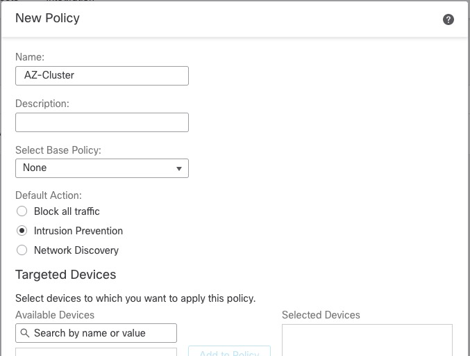
Access Policy
In order to onboard Thread Defense devices, we must have an Access Policy. cdFMC comes with a default policy or we can create a new policy.

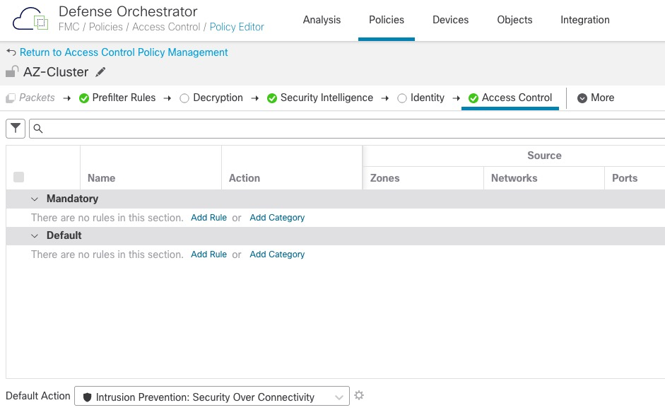
Adding Firewall Cluster
Unlike traditional on-prem FMC, we add devices from the CDO GUI and not in cdFMC.


For the name, we will use the same name as the cluster config.
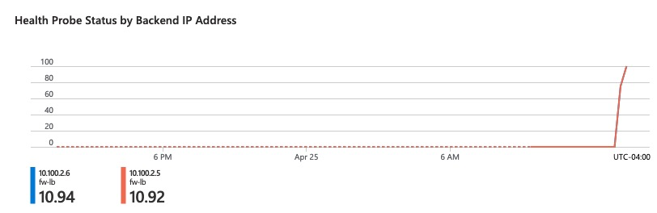
We pick the Access Control Policy we created earlier
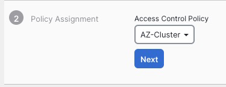
On the next screen, we select performance tier and the licensing options

On the next screen, we are given the command that we need to execute to add the cluster to CDO. It is crucial that you click Next on this screen before pasting this command in CLI.
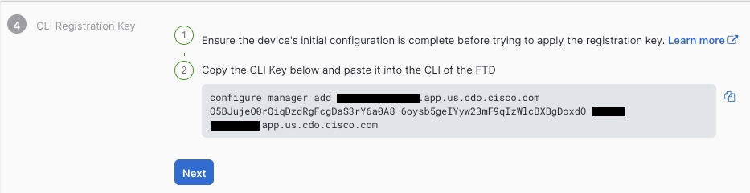
We’re finally presented with the completion screen
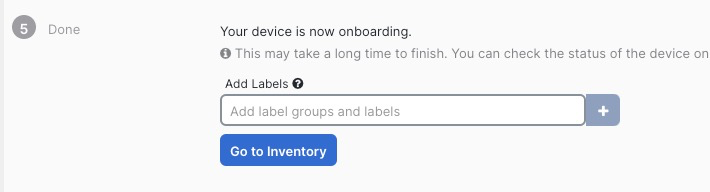
Going back to CLI, we paste in the onboarding command
> configure manager add ***.app.us.cdo.cisco.com O5BJujeO0rQiqDzdRgFcgDaS3rY6a0A8 6oysb5geIYyw23mF9qIzWlcBXBgDoxdO ***.app.us.cdo.cisco.com
Manager ***.app.us.cdo.cisco.com successfully configured.
Please make note of reg_key as this will be required while adding Device in FMC.After 10 minutes or so, we can see the cluster fully onboarded in FMC GUI.
The errors shown above are due to the firewalls not receiving any data.
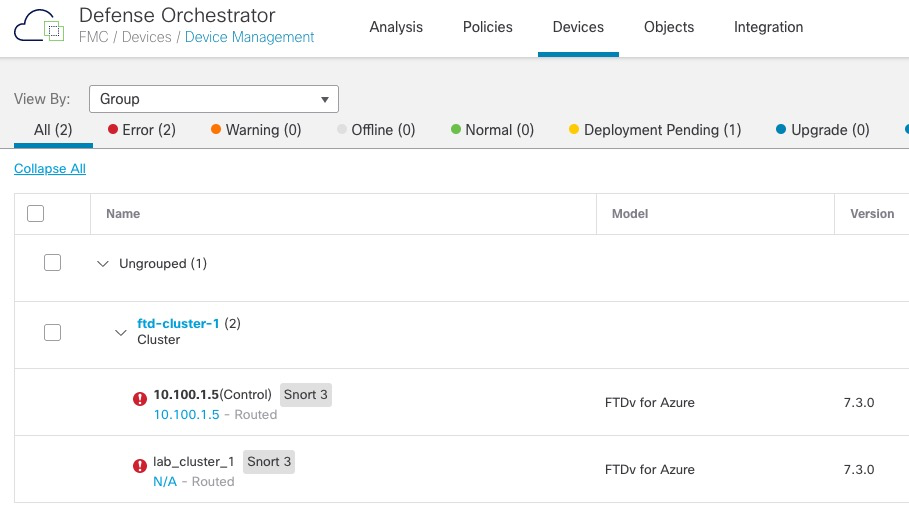
Default Route to Azure
If we look at status of the firewalls in Load Balancer statistics in Azure portal, we can see that they're not responding to Health Probes.
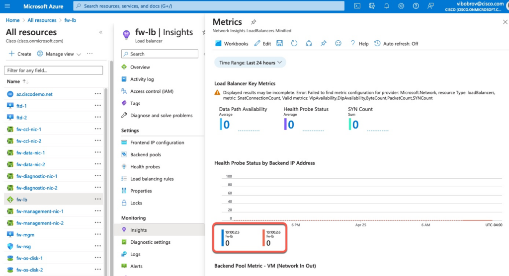
If we perform a capture on the vxlan_tunnel interface, we can see that the probes are coming from 168.63.129.16 address which Azure uses for many different services.
ftd-2# capture health interface vxlan_tunnel real-time match tcp any any eq 12345
Warning: using this option with a slow console connection may
result in an excessive amount of non-displayed packets
due to performance limitations.
Use ctrl-c to terminate real-time capture
1: 15:00:59.877930 168.63.129.16.63627 > 10.100.2.6.12345: S 288456937:288456937(0) win 64240 <mss 1440,nop,wscale 8,nop,nop,sackOK>
2: 15:00:59.877960 168.63.129.16.63626 > 10.100.2.6.12345: S 632867129:632867129(0) win 64240 <mss 1440,nop,wscale 8,nop,nop,sackOK>
3: 15:01:03.881180 168.63.129.16.63626 > 10.100.2.6.12345: S 632867129:632867129(0) win 64240 <mss 1440,nop,wscale 8,nop,nop,sackOK> We can fix this by adding a default gateway via the vxlan_tunnel interface.
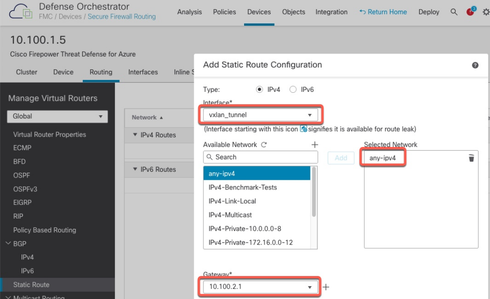
With the default gateway added, we can now see that the firewalls show successful probe results